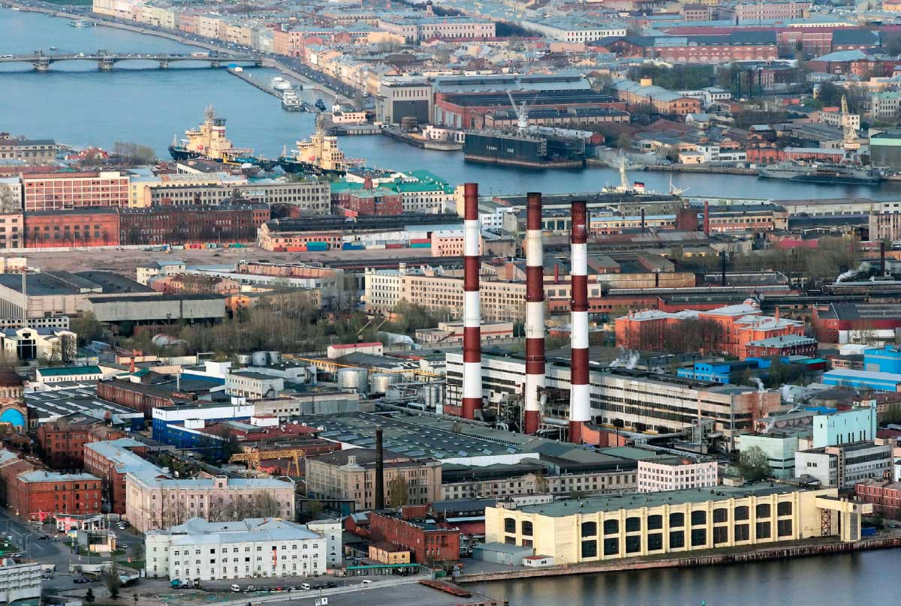
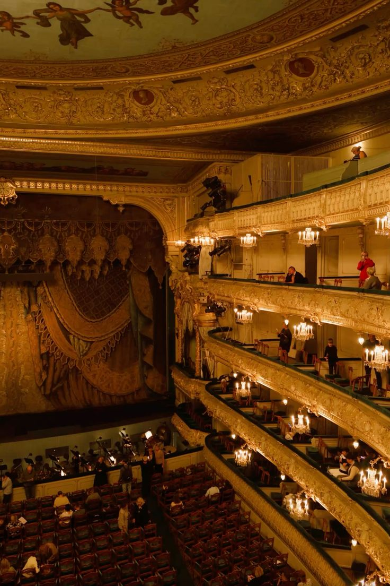
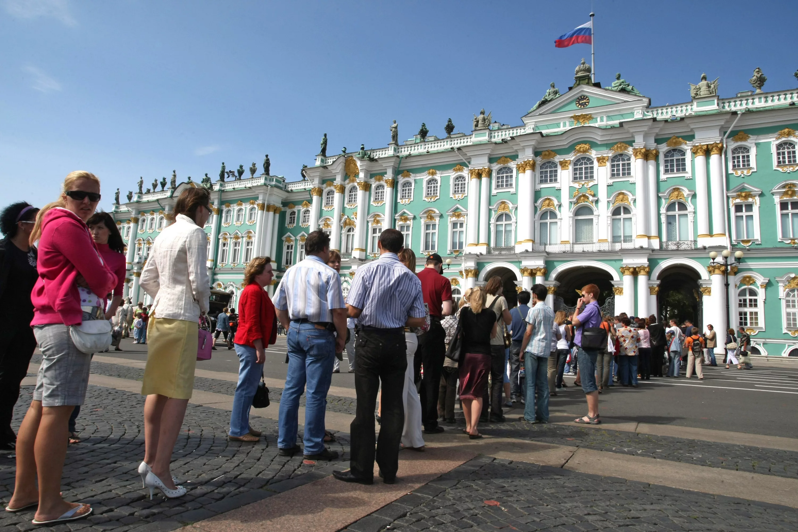

Экономика Санкт-Петербурга — диверсифицированная, с упором на промышленность, высокотехнологичные отрасли и сферу услуг. Ключевые драйверы роста: промышленное производство (особенно судостроение, радиоэлектроника, фармацевтика и машиностроение), IT и цифровые технологии, а также туризм (гостиничный бизнес, общественное питание, транспорт).Промышленность — один из ключевых драйверов экономики города. На обрабатывающие производства приходится около 86% объёма промышленной продукции. Среди отраслей наиболее развиты: Машиностроение (включая судостроение, производство энергетического оборудования, радиоэлектронику). Фармацевтическая промышленность — активно наращивает производственные мощности в рамках задач по обеспечению лекарственной безопасности страны. Авиастроение (включая производство беспилотных летательных аппаратов). Торговля (оптовая и розничная) формирует значительную часть валового регионального продукта (ВРП). В этой сфере занято около 20% трудоспособного населения города. Транспорт и логистика — системообразующая отрасль, обеспечивающая жизнедеятельность города и развитие внутренней и внешней торговли. Транспортная система включает автомобильный, железнодорожный, морской, внутренний водный, воздушный и трубопроводный транспорт. Санкт-Петербург — крупный транспортный узел, через который проходят международные транспортные коридоры. Туризм и индустрия гостеприимства — важный сектор экономики, который создаёт мультипликативный эффект для смежных отраслей (гостиничный бизнес, общественное питание, транспорт, торговля сувенирной продукцией). В 2025 году вклад туризма в экономику города составил более 800 млрд рублей. Строительство — отрасль, которая также вносит существенный вклад в ВРП. Деятельность в сфере операций с недвижимым имуществом — финансовый сектор, который занимает заметное место в структуре экономики города

Санкт-Петербург — крупнейший центр мировой и российской культуры с более чем 300-летней историей, часто называемый <культурной столицей>. Ежегодно в городе проходят международные фестивали искусств, театральные и музыкальные события. Также в Санкт-Петербурге действуют филармония, концертные залы, художественные галереи и выставочные пространства. Архитектурный облик города — его главная ценность. Строгие прямые улицы, просторные площади, сады, реки и каналы, узорчатые ограды и монументальные скульптуры создают неповторимый облик. Многие ансамбли, такие как исторический центр, Невский проспект, дворцово-парковые комплексы Петергофа, Царского Села и Павловска, представляют собой уникальные памятники мирового значения.

Санкт-Петербург — крупнейший культурный центр России: его исторический центр и памятники включены в список всемирного наследия ЮНЕСКО. Город славится архитектурой, музеями (Эрмитаж, Русский музей), театрами (Мариинский, Александринский) и дворцово-парковыми ансамблями (Петергоф, Пушкин, Павловск). Привлекает туристов белыми ночами, разводными мостами и насыщенной современной культурной жизнью.